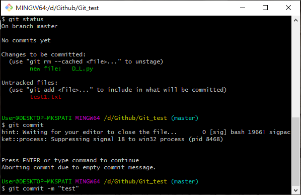
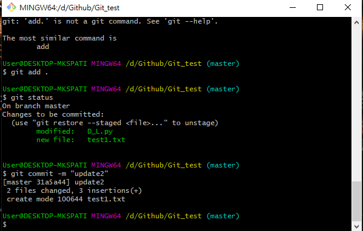

Git與GitHub

Git是甚麼?
是一種版本控制的工具。
GitHub是甚麼?
一個網站。讓你放原始碼 (Source Code) 的空間，如果只需要放公開的程式碼，可以免費使用。
Git bash指令
開啟資料夾位置並又鍵點選Git bash
輸入git init，初始化目錄，讓Git開始進行版本控制，輸入git status顯示目前目錄狀態，Untracked files:還未commit的檔案。
新增一個檔案，再輸入git status可以發現新增的檔案。
輸入git add D_L.py的檔案，再輸入git status可以看到綠色new file:D_L.py說明追蹤指定的檔案，而Untrack files並未追蹤到。
再輸入git commit -m "xxx"，再輸入git log可以看到commit成功。。
我們改寫D_L.py裡面的內容，輸入git status可以看到紅字modifide: D_L.py
輸入git add .，把全部檔案都追蹤並commit。
再GitHub創建一個Repository。
把git remote add origin https://github.com/....給複製下來。。
輸入git push -u origin master，-u為下次push時可以直接git push，就不需用origin master。